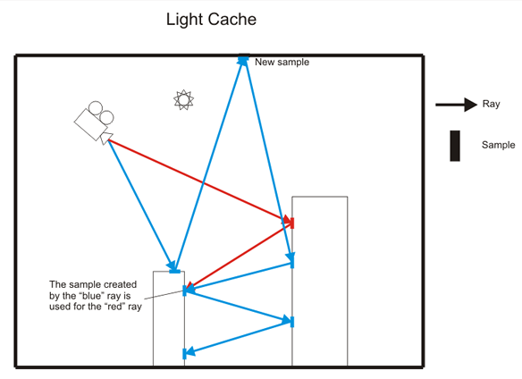
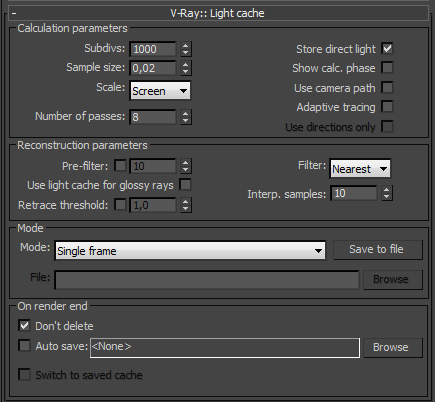
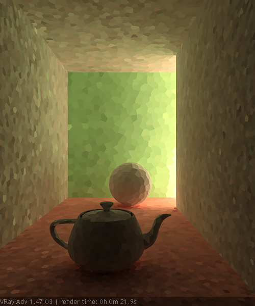
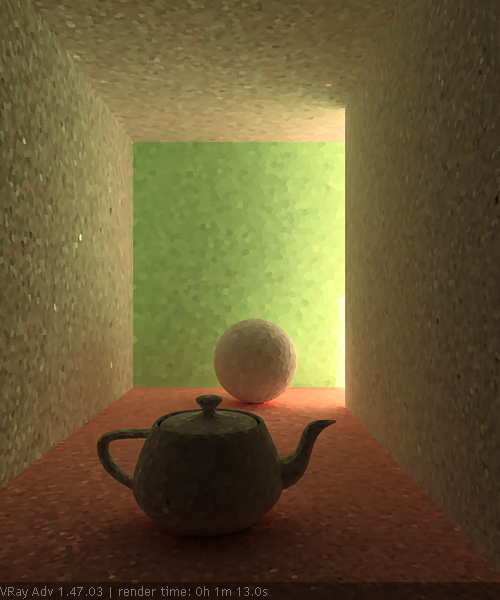
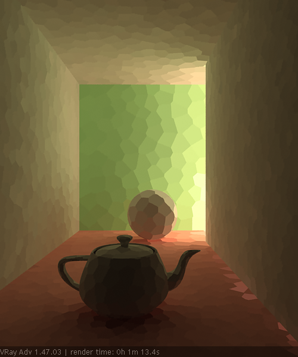
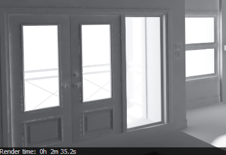
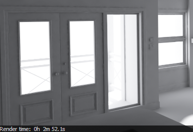
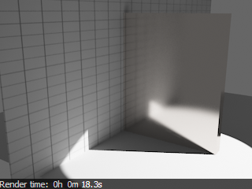
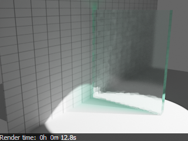
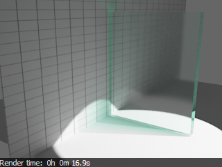

Light Cache
Light Cache Overview
Light caching (called "light mapping" in older versions of V-Ray) is a technique for approximating the global illumination in a scene. This method was developed originally by Chaos Group specifically for the V-Ray renderer. It is very similar to photon mapping, but without many of its limitations.
The light cache is built by tracing many eye paths from the camera. Each of the bounces in the path stores the illumination from the rest of the path into a 3d structure, very similar to the photon map. On the other hand, in a sense, it is the exact opposite of the photon map, which traces paths from the lights, and stores the accumulated energy from the beginning of the path into the photon map.
Although very simple, the light-caching approach has many advantages over the photon map:
-
It is easier to set up. We only have the camera to trace rays from, as opposed to the photon map, which must process each light in the scene and usually requires separate setup for each light.
-
The light-caching approach works efficiently with any lights - including skylight, self-illuminated objects, non-physical lights, photometric lights, etc. In contrast, the photon map is limited in the lighting effects it can reproduce - for example, the photon map cannot reproduce the illumination from skylight or from standard omni lights without inverse-square falloff.
-
The light cache produces correct results in corners and around small objects. The photon map, on the other hand, relies on tricky density estimation schemes, which often produce the wrong results in these cases, either darkening or brightening those areas.
-
In many cases, the light cache can be visualized directly for very fast and smooth previews of the lighting in the scene.
Even with these advantages, light caching is similar in speed to the photon map and can produce approximations to the global lighting in a scene very quickly. In addition, the light cache can be used successfully for adding GI effects to animations.
Of course, the light cache has some limitations:
-
Like the irradiance map, it is view-dependent and is generated for a particular position of the camera.
-
Like the photon map, the light cache is not adaptive. The illumination is computed at a fixed resolution, which is determined by the user.
-
The light cache does not work very well with bump maps.
The following diagram shows the way the Light Cache is being generated. To get the lighting from the environment V-Ray traces many rays from the camera into the scene. Each bounce of light creates a sample in the light cache that can be used during the rendering. If one ray hits a sample that was created by another ray the tracing is stopped and the information from the sample is read instead. This speeds up the process a lot.

Light Cache
 These parameters affect the calculation phase of the light cache; they do not affect the final rendering.
Subdivs - this determines how many paths are traced from the camera. The actual number of paths is the square of the subdivs (the default 1000 subdivs mean that 1 000 000 paths will be traced from the camera).
Example: The Subdivs Parameter
The Subdivs parameter controls the number of rays that are shot into the scene and the "noise" quality of the light cache samples.
Here is a scene rendered with different settings for the Subdivs parameter (all other settings are the same).
-
As we add more samples, the noise is reduced, but the render times increase. When the Subdivs parameter is increased twice, the light cache takes approximately 4 times as long to calculate.

Subdivs = 500
Subdivs = 1000
Subdivs = 2000
Sample size - this determines the spacing of the samples in the light cache. Smaller numbers mean that the samples will be closer to each other, the light cache will preserve sharp details in lighting, but it will be more noisy and will take more memory. Larger numbers will smooth out the light cache but will loose detail. This value can be either in world units or relative to the image size, depending on light cache Scale mode.
Example: The Sample Size Parameter
The Sample size parameter controls the size of the individual light cache samples. Smaller values produce a more detailed lighting solution, but are noisier and take more RAM. Larger values produce less detail, but take less RAM and may be faster to calculate.
Here is a scene rendered with different values for the Sample size parameter. All other values are the same.
-
Note the light leak from the wall on the right in the last image - this is because samples from the other side of the wall are quite large (because of the Screen Scale) and end up being used on the side facing the camera (compare this with the World Scale in the above example).
-
Note the difference in the noise level between the samples.

Sample size = 0.01
Sample size = 0.02

Sample size = 0.0
Scale - this parameter determines the units of the Sample size and the Filter size:
-
Screen - the units are fractions of the final image (a value of 1.0 means the samples will be as large as the whole image). Samples that are closer to the camera will be smaller, and samples that are far away will be larger. Note that the units do not depend on the image resolution. This value is best suited for stills or animations where the light cache needs to be computed at each frame.
-
World - the sizes are fixed in world units everywhere. This can affect the quality of the samples - samples that are close to the camera will be sampled more often and will appear smoother, while samples that are far away will be noisier. This value might work better for fly-through animations, since it will force constant sample density everywhere.
Number of passes - the light cache is computed in several passes, which are then combined into the final light cache. Each pass is rendered in a separate thread independently of the other passes. This ensures that the light cache is consistent across computers with different number of CPUs. In general, a light cache computed with smaller number of passes may be less noisy than a light cache computed with more passes, for the same number of samples; however small number of passes cannot be distributed effectively across several threads. For single-processor non-hyperthreading machines, the number of passes can be set to 1 for best results.
Store direct light - with this option, the light cache will also store and interpolate direct light. This can be useful for scenes with many lights and irradiance map or direct GI method for the primary diffuse bounces, since direct lighting will be computed from the light cache, instead of sampling each and every light. Note that only the diffuse illumination produced by the scene lights will be stored. If you want to use the light cache directly for approximating the GI while keeping the direct lighting sharp, uncheck this option.
Show calc. phase - turning this option on will show the paths that are traced. This does not affect the calculation of the light cache and is provided only as a feedback to the user. This option is ignored when rendering to fields - in that case, the calculation phase is never displayed.
Use camera path - when this option is on, V-Ray will calculate the light cache samples for the entire camera path, instead of just the current view, in the same way as this is done for the Fly-through mode. This is useful when rendering animations with moving objects where the camera also moves and the light cache needs to be in Single frame mode. In this case, setting the Use camera path option on will help to reduce any flickering, as the GI sample positions on static geometry will not change.
Adaptive tracing - when this option is on, V-Ray will store additional information about the incoming light for each light cache sample, and try to put more samples into the directions from which more light coming. This may help to reduce the noise in the light cache, particularly in the case of caustics.
Use directions only - this option is only available when the Adaptive tracing option is on. It causes V-Ray to only use the optimized directions, generated from the light cache samples, rather than the accumulated irradiance from the samples themselves. This produces more accurate results, but also a noisier light cache. Larger values cause more retracing to occur and will slow down the rendering. Lower values will make rendering faster, but may cause artifacts to reappear.
Reconstruction Parameters
These parameters control how the light cache is used in the final rendering, after is has been calculated.
Pre-filter - when this is turned on, the samples in the light cache are filtered before rendering. Note that this is different from the normal light cache filtering (see below) which happens during rendering. Prefiltering is performed by examining each sample in turn, and modifying it so that it represents the average of the given number of nearby samples. More prefilter samples mean a more blurry and less noisy light cache. Prefiltering is computed once after a new light cache is computed or loaded from disk.
Filter - this determines the type of render-time filter for the light cache. The filter determines how irradiance is interpolated from the samples in the light cache.
-
None - no filtering is performed. The nearest sample to the shaded point is taken as the irradiance value. This is the fastest option, but it may produce artifacts near corners, if the light cache is noisy. You can use pre-filtering (see above) to decrease that noise. This option works best if the light cache is used for secondary bounces only or for testing purposes.
-
Nearest - this filter looks up the nearest samples to the shading point and averages their value. This filter is not suitable for direct visualization of the light cache, but is useful if you use the light cache for secondary bounces. A property of this filter is that is adapts to the sample density of the light cache and is computed for a nearly constant time. The Interpolation samples parameter determines how many of the nearest samples to look up from the light cache.
-
Fixed - this filter looks up and averages all samples from the light cache that fall within a certain distance from the shaded point. This filter produces smooth results and is suitable for direct visualization of the light cache (when it is used as the primary GI engine). The size of the filter is determined by the Filter size parameter. Larger values blur the light cache and smooth out noise. Typical values for the Filter size are 2-6 times larger than the Sample size. Note that Filter size uses the same scale as the Sample size and its meaning depends on the Scale parameter.
Use light cache for glossy rays - if this option is on, the light cache will be used to compute lighting for glossy rays as well, in addition to normal GI rays. This can speed up rendering of scenes with glossy reflections quite a lot. When you use this option, it is recommended to also enable the Retrace threshold option, which will prevent the light cache from being visible in very glossy surfaces.
Retrace threshold - when enabled, this option improves the precision of the global illumination in cases where the light cache will produce too large an error. This is especially obvious with the Use light cache for glossy rays option, or near corners where light leaks might be possible because of the light cache interpolation. For glossy reflections and refractions, V-Ray dynamically decides whether to use the light cache or not based on the surface glossiness and the distance from it so that the errors due to the light cache are minimized. Note that this options may increase the render time.
Example: The Retrace Threshold Parameter
The first set of images shows how the Retrace threshold parameter can be used to reduce light leaks due to the light cache interpolation. The scene is an interior scene with parts of the exterior visible. The bright light cache samples from the exterior blend with the darker samples from the interior causing light leaks when the irradiance map is calculated. The Retrace threshold option (with the default value of 1.0) successfully resolves the problem at the expense of slightly increased calculation time for the irradiance map.

Without retracing, light cache samples from the bright exterior are mixed with the dark samples in the exterior causing light leaks.

With light cache retracing enabled, the light leaks are successfully eliminated at the expense of slightly longer irradiance map calculation time.
The second scene in this example shows how the Retrace threshold option can be used to improve the appearance of glossy reflections and refraction with the Use light cache for glossy rays option. In this case, V-Ray dynamically decides whether to use the light cache or not, based on the glossiness of the surface and the distance from it.
 

Without retracing, the light cache samples are clearly visible in the glossy reflections and refractions.
With light cache retracing enabled, V-Ray is able to dynamically decide whether to use the light cache or not, leading to a much better result.
Mode
Mode - determines the rendering mode of the light cache:
-
Progressive path tracing - in this mode, the light cache algorithm is used to sample the final image progressively. For a discussion of this mode see the tutorial .
-
Single frame - this will compute a new light cache for each frame of an animation.
-
Fly-through - this will compute a light cache for an entire fly-through animation, assuming that the camera position/orientation is the only thing that changes. The movement of the camera in the active time segment only is taken in consideration. Note that it may be better to use World Scale for fly-through animations. The light cache is computed only at the first rendered frame and is reused without changes for subsequent frames.
-
From file - in this mode, the light cache is loaded from a file. The light cache file does not include the prefiltering of the light cache; prefiltering is performed after the light cache is loaded, so that you can adjust it without the need to recompute the light cache.
File - specifies the file name to load the light cache from, when the Mode is set to From file.
Save to file - this button allows the user to save the light cache to a file on disk, for later re-use. Note that the Don't delete option must be on for this to work - otherwise, the light cache will be deleted as soon as rendering is complete and it will not be possible to save it.
On Render End
This group of controls determine what happens with the light cache after rendering is complete.
Don't delete - when on (the default), the light cache remains in memory after the rendering. Turn this option off to automatically delete the light cache (and thus save memory).
Auto save - when on, the light cache will be automatically written to the specified file. Note that the light cache will be written as soon as it is calculated, rather than at the actual end of the rendering.
Switch to saved map - when on, after the rendering is complete, the light cache Mode will be automatically set to From file and the name of the auto-saved light cache file will be copied to the File parameter.
Notes
-
Do not set the Adaptive amount in the DMC sampler rollup to 0.0 when using the light cache, as this will cause excessive render times.
-
Do not apply perfectly white or very close to white materials to a majority of the objects in the scene, as this will cause excessive render times. This is because the amount of reflected light in the scene will decrease very gradually and the light cache will have to trace longer paths. Also avoid materials that have one of their RGB components set to maximum (255) or above.
-
If you want to use the light cache for animation, you should choose a large enough value for the Filter size in order to remove the flickering in the GI.
-
There is no difference between light caches computed for primary bounces (direct visualization) and for secondary bounces. You can safely use light caches computed in one of these modes for the other.
-
Similar to the photon map, you can get "light leaks" with the light cache around very thin surfaces with substantially different illumination on both sides. Sometimes it may be possible to reduce this effect by assigning different GI Surface ID's to the objects on both sides of the thin surface (see the Object settings dialog); the effect can also be reduced by decreasing the Sample size and/or the filtering.